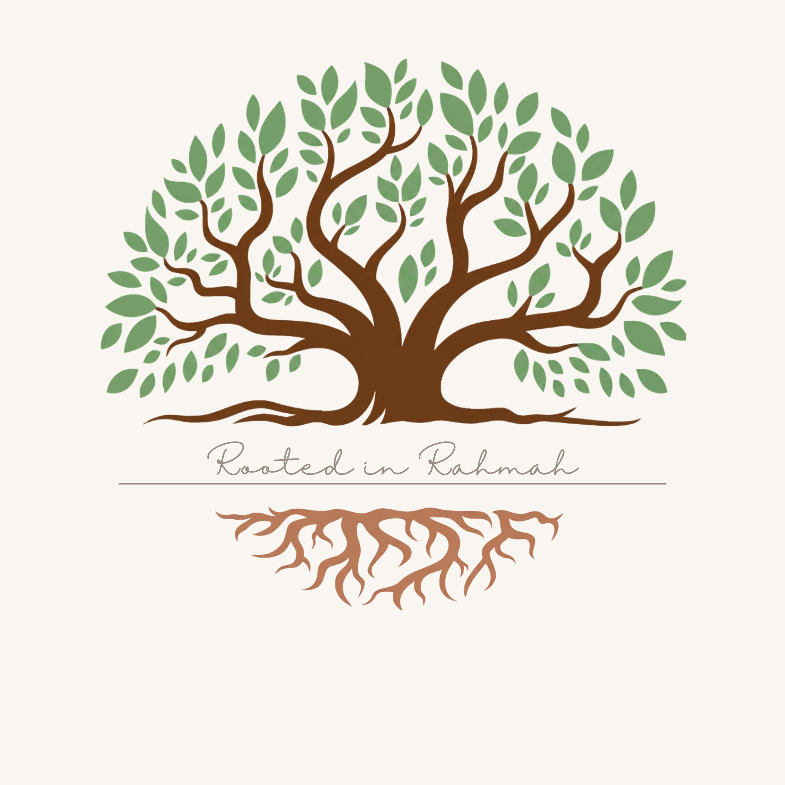

Rahmah means mercy, compassion, care extended to others. It's the value everything here is built around: a name for the things I build, rather than a fixed idea of what they have to be.
I'm Aneeza. By day, I work in federal consulting. Alongside that, I bake, and I coach: two different crafts, same intention. This is where they live.
Slow-fermented, naturally leavened bread, baked in small batches out of my kitchen in Ellicott City. Orders close Friday; pickup is Sunday.
Visit Sourdough StudioResume reviews, interview prep, and coaching for people navigating a turning point in their career, drawn from my own path across federal consulting, HCI, and systems engineering.
Visit Career CompassI live in Ellicott City, Maryland, where I split my time between client work, a sourdough starter I've kept alive for years, and helping people figure out their next career move. Long-term, I'm working toward teaching, and eventually a small community café, a place where both halves of this would finally share a roof.